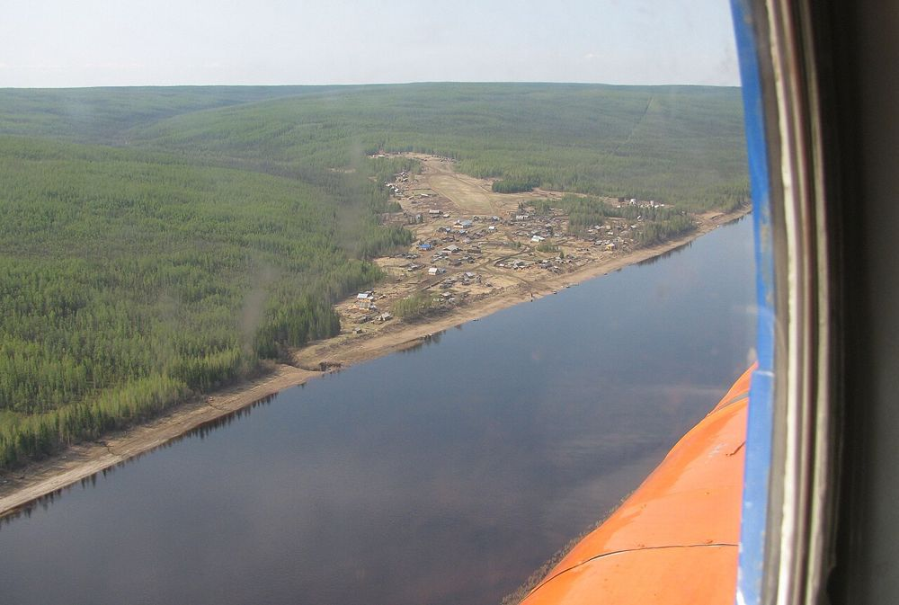
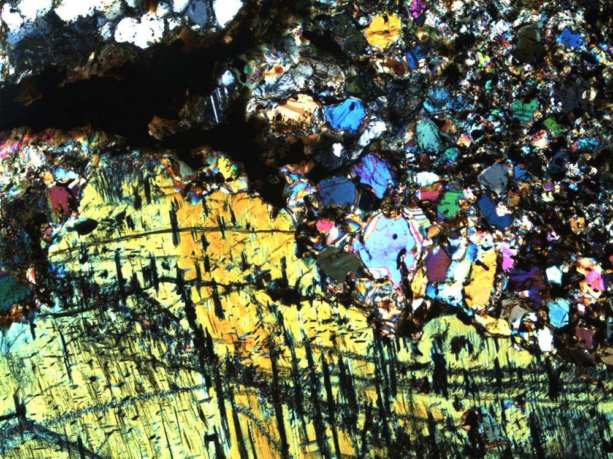

1O sabah ne oldu?
30 Haziran 1908 sabahı, Orta Sibirya'da Podkamennaya Tunguska Nehri yakınlarında gökyüzünde parlak bir ışık topu görüldü. Ardından muazzam bir patlama oldu. Tanıklar Güneş kadar parlak bir cismin gökyüzünü yardığını, ardından gök gürültüsüne benzeyen seslerin ve güçlü bir sıcaklık dalgasının geldiğini anlattı.
Kilometrelerce uzaktaki insanlar şok dalgasıyla yere düştü. Yaklaşık 60 km uzaktaki bir ticaret karakolunda bir adam sandalyesinden fırladığını ve gömleğinin yanacakmış gibi ısındığını anlattı. Yaklaşık 200 km yarıçaplı bir alanda pencere camları kırıldı. Patlama Rusya ve Almanya'daki sismograflarda kayda geçti, atmosferdeki basınç dalgası dünyanın dört bir yanında ölçüldü.

2Geceler neden aydınlandı?
Patlamadan sonraki birkaç gece Avrupa ve Asya'nın batısında gökyüzü olağanüstü parlak kaldı. Bazı yerlerde insanların gece yarısı sokakta gazete okuyabildiği anlatılır. Bilim insanları bunu, atmosferin üst katmanlarına yayılan toz ve buz parçacıklarının güneş ışığını yansıtmasıyla açıklıyor.
3Krater yok, ağaçlar yelpaze gibi devrilmiş
Bölge son derece ıssız olduğu ve o yıllarda Rusya savaş ve devrimle uğraştığı için ilk bilimsel keşif ancak 1921'de başladı. Bilim insanı Leonid Kulik patlamanın merkezine ancak 1927'de ulaşabildi.
Kulik'in gördüğü manzara şaşırtıcıydı. Yaklaşık 2.150 km²lik bir ormandaki ağaçlar, bir merkezden dışarı doğru yelpaze gibi yere yatmıştı. Bu alan bir büyük şehrin yüzölçümüne eşdeğerdir. Ama ortada bir krater yoktu. Tam merkezdeki ağaçlar ise devrilmemiş, ayakta kalmıştı. Yalnızca dalları ve kabukları soyulmuştu, tıpkı bir telefon direği gibi.
Bu durum, patlamanın yerde değil havada, ağaçların tam tepesinde olduğunu gösteriyordu. Şok dalgası merkezdeki ağaçlara yukarıdan çarptığı için onları devirmemiş, yalnızca dallarını koparmıştı. Uzaktaki ağaçlara ise yandan çarparak onları yere yatırmıştı.

4Bilim ne diyor?
Bilim insanlarının büyük çoğunluğuna göre Tunguska olayının sebebi, onlarca metre büyüklüğünde bir göktaşı ya da kuyruklu yıldız parçasının yere ulaşmadan, yerden 5-10 km kadar yükseklikte patlamasıdır. Atmosfere çok yüksek hızla giren cisim, havanın sürtünmesi ve basıncıyla aşırı ısınıp parçalandı ve enerjisinin neredeyse tamamını bir anda açığa çıkardı. Bu yüzden büyük bir krater oluşmadı.
Patlamanın enerjisinin 10-15 megaton TNT civarında, yani Hiroşima'ya atılan atom bombasının yaklaşık bin katı olduğu tahmin ediliyor. Tunguska, kayıtlı tarihte Dünya'yı etkileyen en büyük göktaşı olayı olarak kabul ediliyor. Bölge çok ıssız olduğu için yalnızca birkaç kişinin öldüğü düşünülüyor. Aynı patlama büyük bir şehrin üzerinde olsaydı sonuç felaket olurdu.
💡 Biliyor muydun?
- Sıkça duyulan '80 milyon ağaç devrildi' iddiası, araştırmacılara göre doğrulanmamış ve büyük olasılıkla abartılı bir rakam.
- Her yıl 30 Haziran, göktaşı tehlikesine dikkat çekmek için 'Uluslararası Asteroit Günü' olarak kutlanır.
- 2013'te Rusya'nın Çelyabinsk kentinde benzer ama çok daha küçük bir havada patlama yaşandı. Kırılan camlar yüzünden yaklaşık 1.500 kişi yaralandı.
✅ Kaynaklar
📷 Görseller
- Kapak: Leonid Kulik, the expedition to the Tunguska event · Public domain · Wikimedia Commons
- Olaya adını veren Podkamennaya Tunguska Nehri ve kıyısındaki bir yerleşim (helikopterden): ShavPS · CC BY-SA 3.0 · Wikimedia Commons
- Patlama bölgesinden alınan bir taş parçasının mikroskop altındaki ince kesiti: Cmbrenneisen58 · CC BY 4.0 · Wikimedia Commons